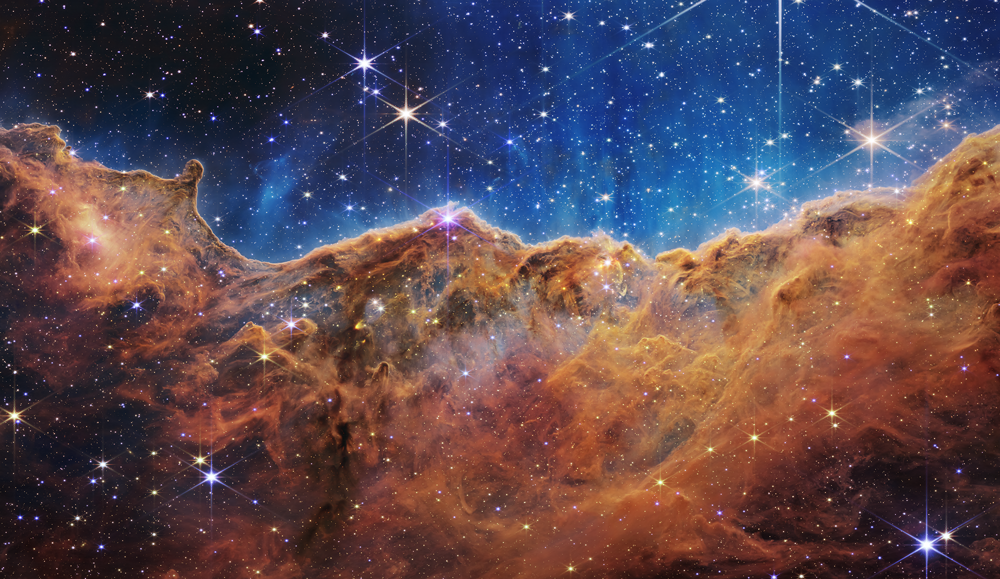

Here are my personal top five photos
that we have seen so far from the James Webb Space Telescope
(as of October 4th, 2023).
Top Five JWST Photos
Number 5
HH211

Number 4
Orion Nebula

Number 3
Carina Nebula
Number 2
SMACS 0723

Number 1
Pillars of Creation